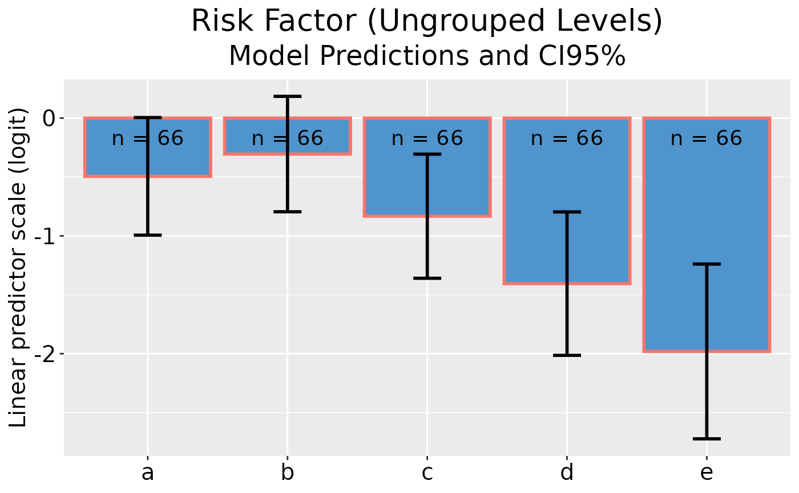
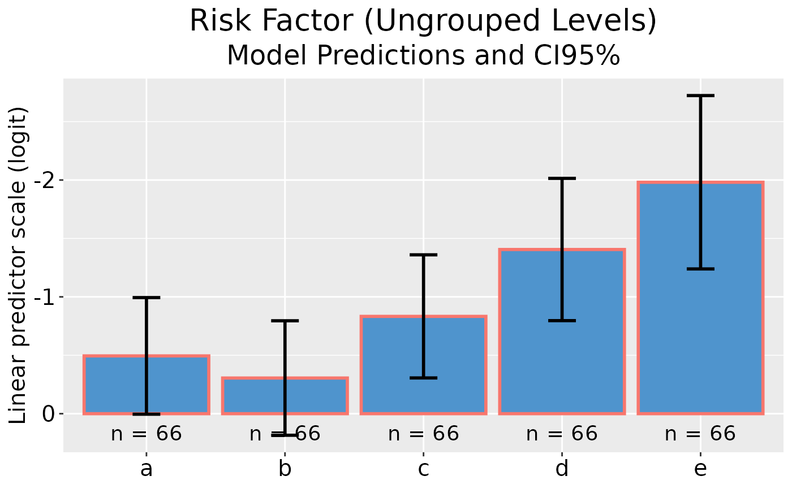
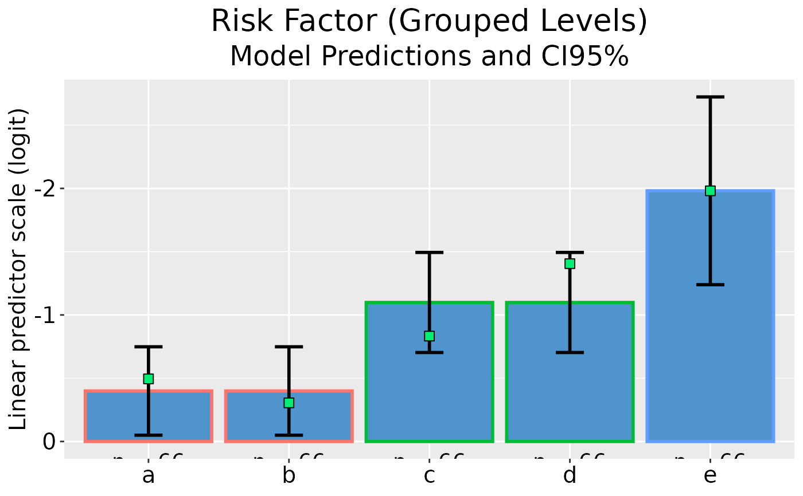
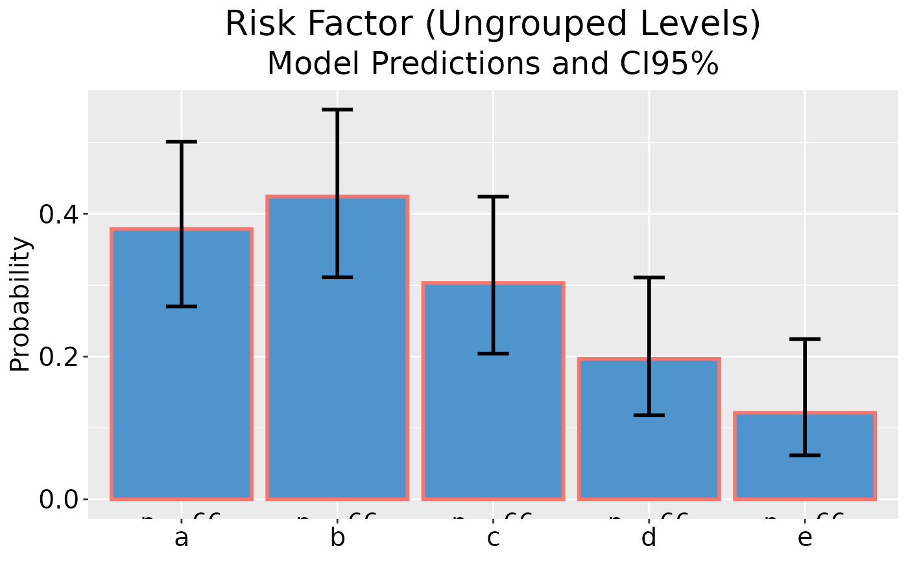
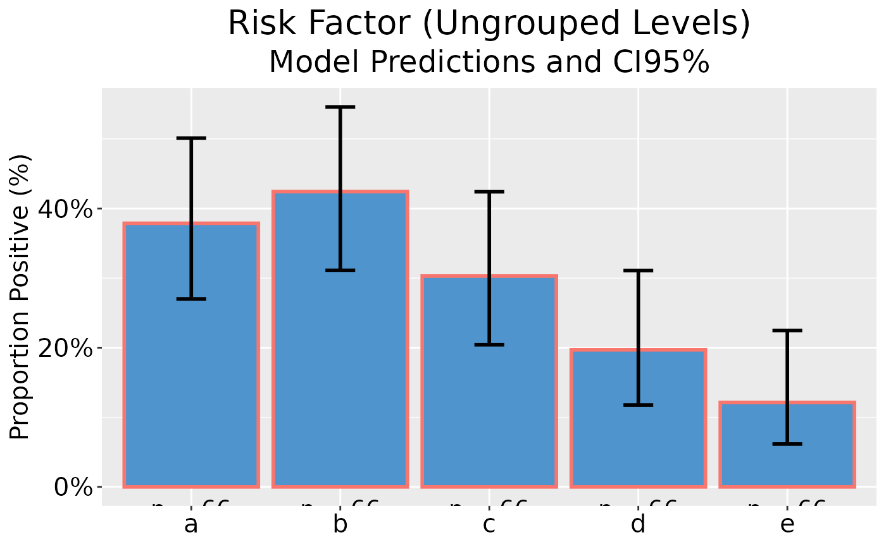
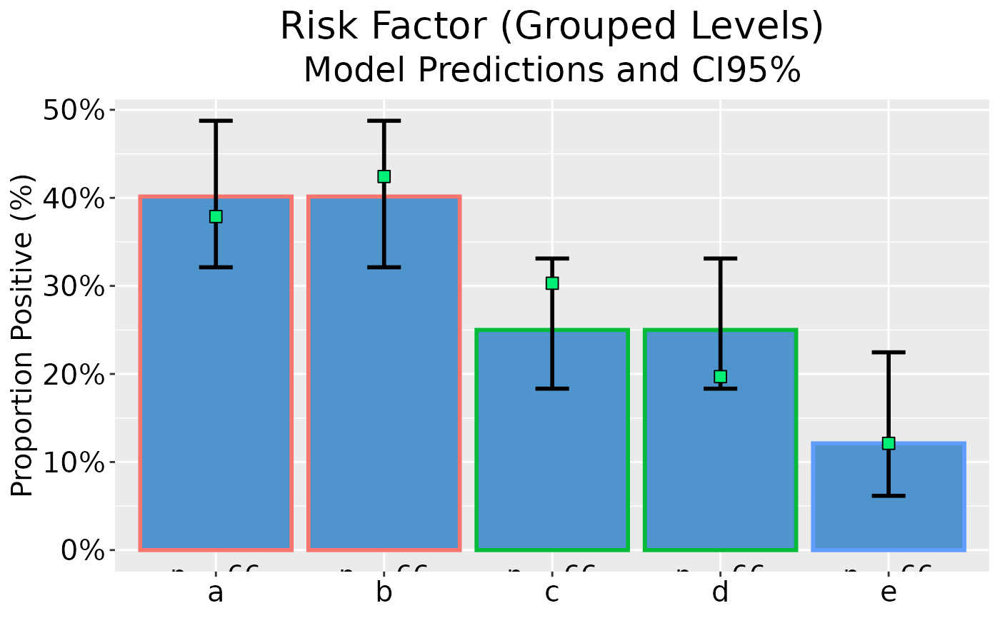
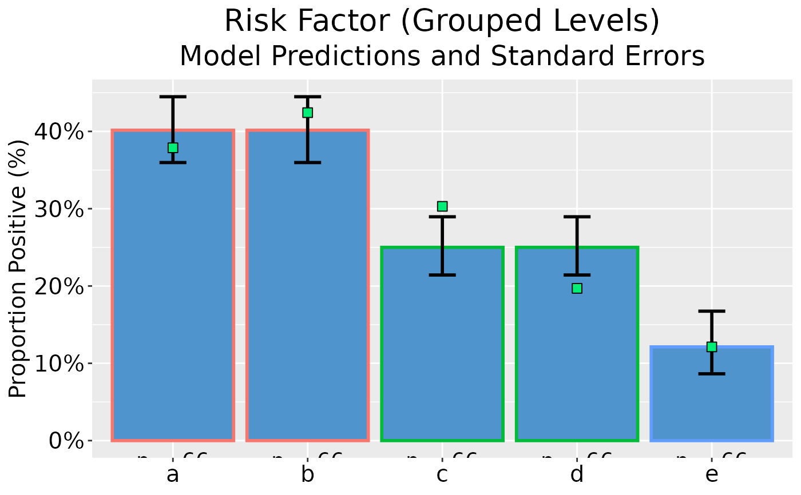
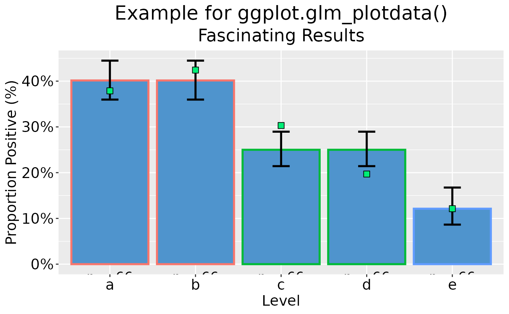

Plot Model Predictions with Error Bars for Univariable GLM
plot_model.RdS3 method to enable ggplot() in package ggplot2 to plot "glm_plotdata"
objects ouptut by glm_plotdata().
Usage
# S3 method for glm_plotdata
ggplot(
data = NULL,
mapping = aes(),
as_percent = FALSE,
rev_y = FALSE,
...,
environment = parent.frame()
)Arguments
- data
a data frame, or a data frame extension (e.g. a
tibble).- mapping
Default list of aesthetic mappings to use for plot. If not specified, must be supplied in each layer added to the plot.
- as_percent
logical. IfTRUE, the y-axis uses a percentage scale; defaultFALSE.- rev_y
logical. IfTRUE, the direction of the y-axis is reversed, which may be useful when plotting linear predictors; defaultFALSE.- ...
further arguments passed to or from other methods. Not currently used.
- environment
![[Deprecated]](figures/lifecycle-deprecated.svg) Used prior to tidy
evaluation.
Used prior to tidy
evaluation.
Value
A ggplot object.
Details
This S3 method plots model predictions and error bars representing confidence intervals or standard errors for a univariable glm with a categorical independent variable, optionally allowing representation of groupings of levels of the independent variable and faceting of a number of such plots.
ggplot.glm_plotdata() recognises a factor or character column in data named grouped for plotting grouped
levels of an independent variable that are grouped within the underlying model. If levels are indeed grouped in the
model, the data bars will be plotted with colour-coded borders representing the groups, and the ungrouped observed
values contained in the data column level are plotted as symbols. If ungrouped levels are to be plotted, the
grouped column should only contain NA values
A character column in data containing names of independent variables to be used for faceting may be identified by
setting an attribute "facet_by" in data. Names of variables to be used for faceting may be converted to more
informative facet labels by using a user-defined, vectorised labeller() function which should
be named var_labs(), see labeller under facet_wrap().
If an individual plot, rather than a faceted plot, is printed, the name of the independent variable, converted by
var_labs() (if provided), will be used for the plot title. The plot title, subtitle and axis labels may be
overridden using the usual ggplot() syntax, see examples.
See also
facet_wrap(), ggplot(), labeller().
Other plot_model:
glm_plotdata(),
glm_plotlist(),
var_labs()
Examples
## Example uses randomly generated data; re-running may be worthwhile.
oldtheme <- theme_get() ## Save ggplot defaults for later restoration
## Set ggplot defaults for pretty printing
theme_update(
plot.title = element_text(color = "black", size = 20, hjust = 0.5),
plot.subtitle = element_text(color = "black", size = 18, hjust = 0.5),
axis.text.x = element_text(color = "black", size = 15),
axis.text.y = element_text(color = "black", size = 15),
axis.title.x = element_text(color = "black", size = 15),
axis.title.y = element_text(color = "black", size = 15),
strip.text.x = element_text(color = "black", size = 15),
legend.position = "none"
)
## "labeller()" function to provide plot titles - see var_labs()
var_labs <- as_labeller(
c(iv = "Risk Factor (Ungrouped Levels)",
iv2 = "Risk Factor (Grouped Levels)")
)
## Create binomial data with groupings
(d <- list(iv2 = list(ab = c("a", "b"), cd = c("c", "d"))) |>
add_grps(binom_data(), iv, .key = _))
#> __________________________
#> Simulated Binomial Data: -
#>
#> # A tibble: 5 × 4
#> iv iv2 pn qn
#> <fct> <fct> <int> <int>
#> 1 a ab 30 36
#> 2 b ab 25 41
#> 3 c cd 18 48
#> 4 d cd 13 53
#> 5 e e 2 64
## Ungrouped GLM plot data on linear predictor scale
(dp <- glm_plotdata(d, .dep_var = cbind(pn, qn), .ind_var = iv))
#> ________________
#> GLM Plot Data: -
#>
#> # A tibble: 5 × 7
#> level grouped n obs pred lower upper
#> * <fct> <fct> <int> <dbl> <dbl> <dbl> <dbl>
#> 1 a NA 66 -0.182 -0.182 -0.669 0.304
#> 2 b NA 66 -0.495 -0.495 -0.994 0.00449
#> 3 c NA 66 -0.981 -0.981 -1.52 -0.437
#> 4 d NA 66 -1.41 -1.41 -2.01 -0.796
#> 5 e NA 66 -3.47 -3.47 -4.88 -2.05
## Plot model predictions and CI error bars
dp |> ggplot()

## Plot model predictions and CI error bars with reversed y-axis
dp |> ggplot(rev_y = TRUE)

## Grouped GLM plot data on linear predictor scale
(dp <- glm_plotdata(d, .dep_var = cbind(pn, qn), .ind_var = iv2, .ungroup = iv))
#> ________________
#> GLM Plot Data: -
#>
#> # A tibble: 5 × 7
#> level grouped n obs pred lower upper
#> * <fct> <fct> <int> <dbl> <dbl> <dbl> <dbl>
#> 1 a ab 66 -0.182 -0.336 -0.684 0.0108
#> 2 b ab 66 -0.495 -0.336 -0.684 0.0108
#> 3 c cd 66 -0.981 -1.18 -1.59 -0.777
#> 4 d cd 66 -1.41 -1.18 -1.59 -0.777
#> 5 e e 66 -3.47 -3.47 -4.88 -2.05
## Plot model predictions and CI error bars with reversed y-axis
dp |> ggplot(rev_y = TRUE)

## Ungrouped GLM plot data on reponse scale
(dp <- glm_plotdata(d, .dep_var = cbind(pn, qn), .ind_var = iv, type = "response"))
#> ________________
#> GLM Plot Data: -
#>
#> # A tibble: 5 × 7
#> level grouped n obs pred lower upper
#> * <fct> <fct> <int> <dbl> <dbl> <dbl> <dbl>
#> 1 a NA 66 0.455 0.455 0.339 0.575
#> 2 b NA 66 0.379 0.379 0.270 0.501
#> 3 c NA 66 0.273 0.273 0.179 0.392
#> 4 d NA 66 0.197 0.197 0.118 0.311
#> 5 e NA 66 0.0303 0.0303 0.00755 0.114
## Plot model predictions and CI error bars
dp |> ggplot()

## Plot model predictions and CI error bars, with y-axis as percentage
dp |> ggplot(as_percent = TRUE)

## Grouped GLM plot data on reponse scale
(dp <- glm_plotdata(d, .dep_var = cbind(pn, qn), .ind_var = iv2, .ungroup = iv, type = "response"))
#> ________________
#> GLM Plot Data: -
#>
#> # A tibble: 5 × 7
#> level grouped n obs pred lower upper
#> * <fct> <fct> <int> <dbl> <dbl> <dbl> <dbl>
#> 1 a ab 66 0.455 0.417 0.335 0.503
#> 2 b ab 66 0.379 0.417 0.335 0.503
#> 3 c cd 66 0.273 0.235 0.170 0.315
#> 4 d cd 66 0.197 0.235 0.170 0.315
#> 5 e e 66 0.0303 0.0303 0.00755 0.114
## Plot model predictions and CI error bars
dp |> ggplot(as_percent = TRUE)

## Grouped GLM plot data on reponse scale with standard errors
(dp <- glm_plotdata(
d, .dep_var = cbind(pn, qn), .ind_var = iv2,
.ungroup = iv, conf_level = NA, type = "response"
))
#> ________________
#> GLM Plot Data: -
#>
#> # A tibble: 5 × 7
#> level grouped n obs pred lower upper
#> * <fct> <fct> <int> <dbl> <dbl> <dbl> <dbl>
#> 1 a ab 66 0.455 0.417 0.374 0.460
#> 2 b ab 66 0.379 0.417 0.374 0.460
#> 3 c cd 66 0.273 0.235 0.200 0.274
#> 4 d cd 66 0.197 0.235 0.200 0.274
#> 5 e e 66 0.0303 0.0303 0.0150 0.0602
## Plot model predictions and standard error bars
dp |> ggplot(as_percent = TRUE)

## Add x-axis label and bespoke titles
dp |> ggplot(as_percent = TRUE) +
labs(
x = "Level",
title = "Example for ggplot.glm_plotdata()",
subtitle = "Fascinating Results"
)

theme_set(oldtheme) ## Restore original ggplot defaults
rm(d, dp, oldtheme)